SpatialModel_HTP.RmdPhenotyping facilities display spatial heterogeneity. For example, the spatial variability of incident light can go up to 100% between pots within a greenhouse (Cabrera-Bosquet et al. 2016). Taking into account these spatial trends is a prerequisite for precise estimation of genetic and treatment effects. In the same way as in field trials, platform experiments should obey standard principles for experimental design and statistical modeling.
Popular mixed models to separate spatial trends from treatment and genetic effects, rely on the use of autoregressive correlation functions defined on rows and columns (AR1×AR1) to model the local trends (Cullis, Smith, and Coombes 2006). These models are sometimes difficult to fit and the selection of a best model is complicated, therefore preventing an automated phenotypic analysis of series of trials. An attractive alternative is the use of 2-dimensional P-spline surfaces, the SpATS model (Spatial Analysis of Trials using Splines, (Rodríguez-Álvarez et al. 2018)). This model corrects for spatial trends, row and column effects and has the advantage of avoiding the model selection step. It also provides the user with graphical outputs that are easy to interpret. It has proven to be a good alternative to the classical AR1×AR1 modeling in the field (Velazco et al. 2017). It is also suitable for phenotyping platform data and has been tested on several datasets in the EPPN2020 project.
The aim of this document is to accurately separate the genetic effects from the spatial effects at each time point. It will provide the user with either genotypic values or corrected values that can be used for further modeling. In brief, separately for each measurement time \(t\), a spatial model is fitted for the trait \(y_t\),
\(y_t = 1_M \beta_{0t} + X_h \beta_{ht} + X_q \beta_{qt} + Z_g c_{gt} + f_t(u,v) + Z_r c_{rt} + Z_c c_{ct} + \epsilon_t\)
where briefly,
PSANOVA function from the SpATS package, \(Z_r c_{rt}\) and \(Z_c c_{ct}\) represent the design matrices and effects for the random row and column effects respectively,For more details see Pérez D.M. et al. (in prep.).
This tutorial describes in detail how to perform analyses to correct for spatial trends using different modeling engines and how to extract the results from the models.
We will use the TP object phenoTPOut in which annotated time points were replaced by NA because they were considered to be outliers. (see statgenHTP tutorial: 2. Outlier detection for single observations).
After creating a TP object, a model can be fitted on the data. This is done using the function fitModels, which uses two different engines for fitting the models, namely SpATS (Rodríguez-Álvarez et al. 2018) and ASReml (Butler et al. 2017). For models with row and column coordinates, SpATS is the default engine (see section 2.1). This can be overruled by specifying the function parameter engine and using ASReml for spatial models (see section 2.2). When the row and column coordinates are not available, ASReml is used for modeling without spatial components (see section 3). Finally, it is possible to decompose the genotypic variance using, for example, a treatment effect (see section 4).
The output of fitModels is an object of class fitMod, a list of fitted models with one item for each time point the model was fitted for.
When SpATS is used for modeling, an extra spatial term is included in the model. This spatial component is composed using the PSANOVA function in the SpATS package which uses 2-dimensional smoothing with P-splines as described in Lee, Durbán, and Eilers (2013) and in Rodríguez-Álvarez et al. (2018). See help(PSANOVA, SpATS) for a detailed description. Extra fixed effects may be fitted using the option extraFixedFactors. The model can also be fitted following a resolvable row-column design setting useRepId as TRUE.
The model specifications are listed in the table below with a simplified model.
| OPTION | MODEL FITTED | SPATIAL TERM |
|---|---|---|
| default | \(y\) = \(\mu\) + genotype + rowId + colId + \(\epsilon\) | PSANOVA |
| extraFixedFactors = c(“A,” “B”) | \(y\) = \(\mu\) + A + B + genotype + rowId + colId + \(\epsilon\) | PSANOVA |
| useRepId = TRUE | \(y\) = \(\mu\) + repId + genotype + repId:rowId + repId:colId + \(\epsilon\) | PSANOVA |
| useCheck = TRUE | \(y\) = \(\mu\) + check + genoCheck + rowId + colId + \(\epsilon\) | PSANOVA |
In the models above, fixed effects are indicated in italics whereas random effects are indicated in bold. “genotype” can be fitted as random or fixed effect using the option what. The option useCheck allows treating some genotypes as check: it splits the column “genotype” into two columns as follows:
| genotype | check | genoCheck |
|---|---|---|
| G1 | noCheck | G1 |
| G2 | noCheck | G2 |
| … | noCheck | … |
| Gn-1 | noCheck | Gn-1 |
| Gn | noCheck | Gn |
| check1 | check1 | NA |
| check2 | check2 | NA |
| … | … | … |
| checkm-1 | checkm-1 | NA |
| checkm | checkm | NA |
NOTE: It is only possible to use the combination of check and genotype as random.
Using the TP object phenoTPOut from the previous vignette, a model for a few time points and trait “EffpsII” can now be fitted on the data as follows. Since engine is not supplied as an option, SpATS is used for fitting the following model:
EffpsII = \(\mu\) + genotype + rowId + colId + \(\epsilon\)
## Fit a model for a few time points.
modPhenoSp <- fitModels(TP = phenoTPOut,
trait = "EffpsII",
timePoints = seq(from = 1, to = 73, by = 5))
summary(modPhenoSp)
#> Models in modPhenoSp where fitted for experiment Phenovator.
#>
#> It contains 15 time points.
#> The models were fitted using SpATS.The output is a fitMod object, a list containing one fitted model per time point. Note that by not supplying the what argument to the function, genotype is set as random. It can be run again with genotype as fixed using what:
EffpsII = \(\mu\) + genotype + rowId + colId + \(\epsilon\)
## Fit a model for a single time point.
modPhenoSpFix <- fitModels(TP = phenoTPOut,
trait = "EffpsII",
timePoints = 3,
what = "fixed")The model can be extended by including extra main fixed effects, here to include extra experimental design factors:
EffpsII = \(\mu\) + repId + Image_pos + genotype + rowId + colId + \(\epsilon\)
## Fit a model for a single time point with extra fixed factors.
modPhenoSpCov <- fitModels(TP = phenoTPOut,
trait = "EffpsII",
extraFixedFactors = c("repId", "Image_pos"),
timePoints = 3)It can be further extended by including check genotypes:
EffpsII = \(\mu\) + repId + Image_pos + check + genoCheck + rowId + colId + \(\epsilon\)
## Fit a model for a single time point with extra fixed effects and check genotypes.
modPhenoSpCheck <- fitModels(TP = phenoTPOut,
trait = "EffpsII",
extraFixedFactors = c("repId", "Image_pos"),
useCheck = TRUE,
timePoints = 3)Finally, a model following a resolvable row-column design can be fitted: including the effects of row and column nested within replicate.
EffpsII = \(\mu\) + repId + genotype + repId:rowId + repId:colId + \(\epsilon\)
## Fit a model for a single time point.
modPhenoSpRCD <- fitModels(TP = phenoTPOut,
trait = "EffpsII",
timePoints = 3,
useRepId = TRUE)The first type of plot that can be made for fitted models, is a spatial plot per time point using plotType = "spatial". It consists of plots, spatial plots of the raw data, fitted values, residuals and either BLUEs or BLUPs, and a histogram of the BLUEs or BLUPs. When SpATS is used for modeling an extra plot with the fitted spatial trend is included (see (Rodríguez-Álvarez et al. 2018) and (Velazco et al. 2017) for interpretation).
Note that spatial plots can only be made if spatial information, i.e. rowNum and colNum, is available in the TP object.
plot(modPhenoSp,
timePoints = 36,
plotType = "spatial",
spaTrend = "raw")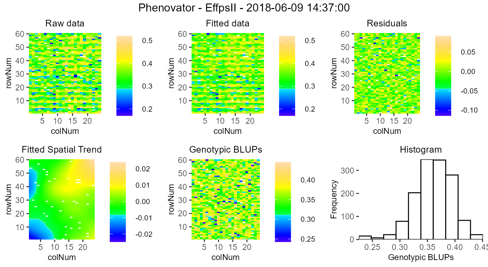
For assessing the importance of the fitted spatial trends at one glance, and for comparison between time points, the plot of the fitted spatial trend can be displayed as a ratio of the raw phenotypic mean: SpatTrend(proportion) = Estimated SpatTrend / mean(raw EffpsII). In this case, the scale will be in percentage and the min/max will be adjusted based on all the time points used but will be at least 10%. This empirical threshold allows visualizing fitted trends that have a relatively small to large importance.
plot(modPhenoSp,
timePoints = 36,
plotType = "spatial",
spaTrend = "percentage")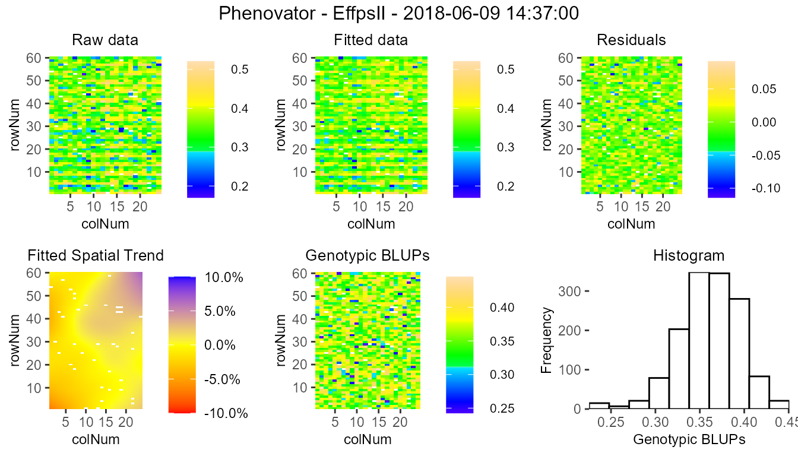
It is also possible to create a time lapse of the ratio of spatial trends over time. The scale is the same as previously described. The time lapse is always written to an output file.
plot(modPhenoSp,
plotType = "timeLapse",
outFile = "TimeLapse_modPhenoSp.gif")Here is an illustration with three time points: 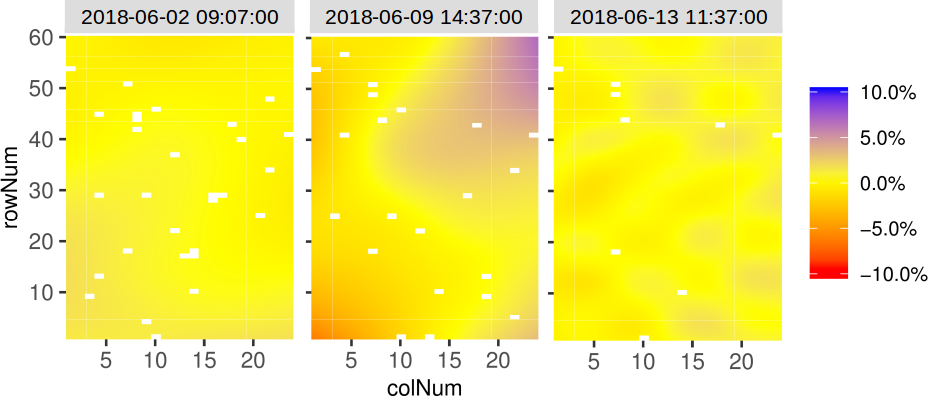
All results that can be extracted are shown in the table below. The first column contains the function names. The second column contains a short description of the result that will be extracted and, where needed, states for which modeling engines it can be extracted.
| FUNCTION | DESCRIPTION |
|---|---|
| getGenoPred | Best Linear Unbiased Predictions (BLUPS, genotype as random) or Estimators (BLUEs, genotype as fixed) |
| getCorrected | Spatially corrected values at the experimental unit level |
| getVar | Variance components |
| getHerit | Generalized heritabilities - only when genotype is random |
| getEffDims | Effective dimensions - only for SpATS engine |
By default, all the functions run for all the time points. It is possible to select some of them using timePoints. The ratio of the effective dimensions can also be extracted using EDType = "ratio" in the getEffDims function.
The output of the function getGenoPred is a list of two dataframes: “genoPred” which contains the predicted values for all tested genotypes and “checkPred” which contains the predicted values of the check genotypes, when useCheck = TRUE in the model. “checkPred” is empty when useCheck = FALSE.
## Extract the genotypic predictions for one time point:
genoPredSp <- getGenoPred(modPhenoSp, timePoints = 6)
## Extract the corrected values for one time point:
spatCorrSp <- getCorrected(modPhenoSp, timePoints = 6)
## Extract model components:
varianceSp <- getVar(modPhenoSp)
heritSp <- getHerit(modPhenoSp)
effDimSp <- getEffDims(modPhenoSp)The genotypic predictions of the test genotypes for one time point are displayed in a table like the following:
| timeNumber | timePoint | genotype | predicted.values | standard.errors |
|---|---|---|---|---|
| 6 | 2018-06-02 09:07:00 | check1 | 0.6658858 | 0.0042992 |
| 6 | 2018-06-02 09:07:00 | check2 | 0.5894226 | 0.0059128 |
| 6 | 2018-06-02 09:07:00 | check3 | 0.6675430 | 0.0057808 |
| 6 | 2018-06-02 09:07:00 | check4 | 0.6746310 | 0.0042380 |
| 6 | 2018-06-02 09:07:00 | G001 | 0.6664166 | 0.0077007 |
| 6 | 2018-06-02 09:07:00 | G002 | 0.6650703 | 0.0077015 |
The corrected values are obtained by considering only the estimated sources of variation which are of interest. Here, the correction follows the procedure described in (Welham et al. 2004). They propose a partition of the explanatory variables in three groups: (i) those for which predicted values are required (i.e. population and genotypic effects), (ii) those to be averaged over (i.e. experimental factors effects), and (iii) those to be ignored (i.e. spatial effects). The corrected trait is obtained as follows (in simplified terms, for full explanation see Pérez et al. (in prep)): \(\tilde{y}_t = \hat \mu_t + \widehat{geno}_t + \widehat{fixed}_t + \hat{\epsilon}_t\)
where \(\widehat{fixed}_t\) are the fixed covariates of interest (e.g. population effect).
This allows keeping the data at the experimental unit level (plants) and having more degrees of freedom for further modeling (e.g. time course modeling and estimation of the time course parameter(s)).
NOTE: The estimated fixed effects included in
extraFixedFactorsare removed from the corrected phenotype (\(\tilde{y}_t\)).
The corrected values of one time point are displayed in a table like the following:
| timeNumber | timePoint | EffpsII_corr | EffpsII | wt | genotype | rowId | colId | plotId |
|---|---|---|---|---|---|---|---|---|
| 6 | 2018-06-02 09:07:00 | 0.6471799 | 0.645 | 41.90837 | check1 | 28 | 11 | c11r28 |
| 6 | 2018-06-02 09:07:00 | 0.6477049 | 0.658 | 41.90837 | check1 | 10 | 16 | c16r10 |
| 6 | 2018-06-02 09:07:00 | 0.6854686 | 0.678 | 41.90837 | check1 | 56 | 9 | c9r56 |
| 6 | 2018-06-02 09:07:00 | 0.6589310 | 0.669 | 41.90837 | check1 | 30 | 4 | c4r30 |
| 6 | 2018-06-02 09:07:00 | 0.6698180 | 0.669 | 41.90837 | check1 | 4 | 20 | c20r4 |
| 6 | 2018-06-02 09:07:00 | 0.6804198 | 0.679 | 41.90837 | check1 | 35 | 13 | c13r35 |
Different plots can be displayed for the fitMod object. The first one is rawPred, it plots the raw data (colored dots, one color per plotId) overlaid with the predicted values (black dots) from the fitted model. One plot is made per genotype with all its plotId. These plots are put together in a 5×5 grid per page.
Using the parameter genotypes, a subset of genotypes will be plotted. By default, data are plotted as dots but this can be changed by setting plotLine = TRUE.
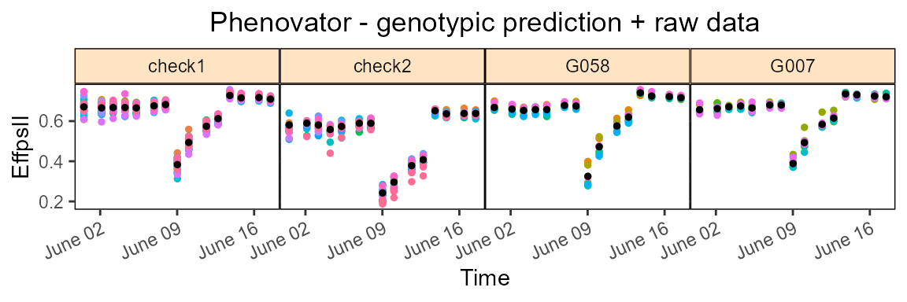
The second one is corrPred, it plots the spatially corrected data (colored dots, one color per plotId) overlaid with the predicted values from the fitted model (black dots). One plot is made per genotype with all its plotId. These plots are put together in a 5×5 grid per page.
Using the parameter genotypes, a subset of genotypes will be plotted. By default, data are plotted as dots but this can be changed by setting plotLine = TRUE.
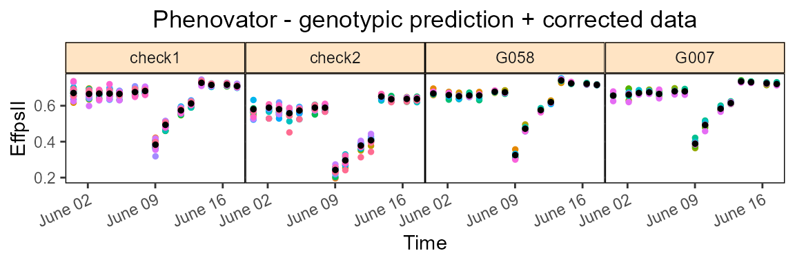
Note that when check genotypes are used for modeling, for the two previous plot types (rawPred and corrPred), the parameter plotChecks should be set to TRUE to display check genotypes.
plot(modPhenoSpCheck,
plotType = "rawPred",
plotChecks = TRUE,
genotypes = c("check1", "check2", "G007", "G058")) The last three types of plot display different model parameters over time. Plot type herit plots the heritability over time. If geno.decomp is used when fitting the model, heritabilities are plotted for each level of the genotype groups in a single plot (see section 4). The scale of the plot can be adjusted using yLim.
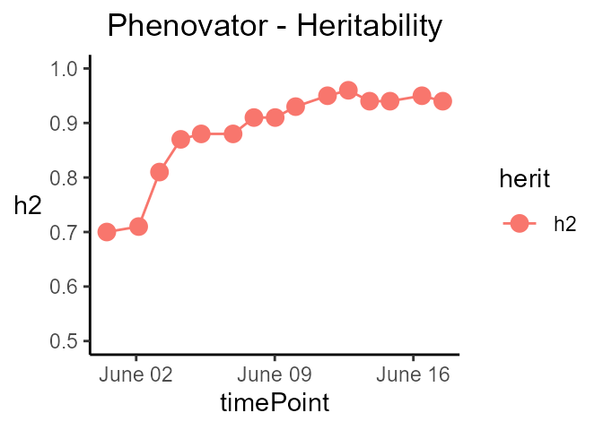
Plot type variance plots the residual, column and row variances over time. These plots can serve as diagnostics of the experiment.
plot(modPhenoSp,
plotType = "variance")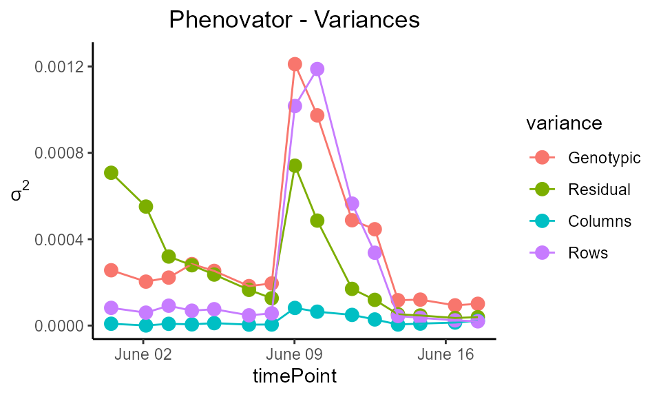
Plot type effDim plots the effective dimension from models fitted using SpATS over time. By default, all the spatial components are plotted. This can be restricted using the option whichED.
plot(modPhenoSp,
plotType = "effDim",
whichED = c("colId", "rowId", "fColRow","colfRow", "surface"),
EDType = "ratio")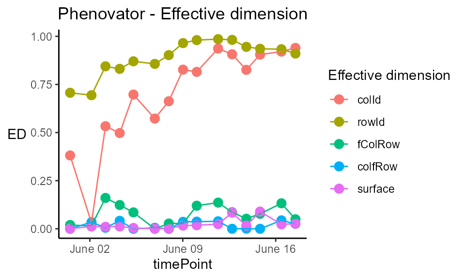
The effective dimensions are also known as the effective degrees of freedom. They can be interpreted as a measure of the complexity of the corresponding component: if the effective dimension of one component is large, it indicates that there are strong spatial trends in this direction. For better comparison between components, the ratio of effective dimensions vs. total dimensions can be used. It has a value between 0, no spatial trend, and 1, strong spatial trend (almost all the degrees of freedom are used to model it).
The table below gives an overview of the effective dimensions and an explanation of their meaning.
| EFFECTIVE DIMENSION | EXPLANATION |
|---|---|
| colId | Linear trend along columns |
| rowId | Linear trend along rows |
| fCol | Smooth trend along columns |
| fRow | Smooth trend along rows |
| fColRow | Linear trend in rows changing smoothly along cols |
| colfRow | Linear trend in cols changing smoothly along rows |
| fColfRow | Smooth-by-smooth interaction trend over rows and cols |
| surface | Sum of smooth trends |
When ASReml is used for modeling and spatial = TRUE, four models are fitted with different random terms and covariance structures. The best model is determined based on a goodness-of-fit criterion, AIC, on 20% of the time points or at least 10 time points. The best model is then run on all time points. As for SpATS, all the ASReml models can be extended by fitting extra fixed factors using the option extraFixedFactors.
Note that for the moment, it is only running with ASReml-R version 4 only.
| OPTION | MODEL FITTED | SPATIAL TERM |
|---|---|---|
| spatial = TRUE | \(y\) = \(\mu\) + genotype + row + col + \(\epsilon\) | AR1(rowId):AR1(colId) |
| AR1(rowId):colId | ||
| rowId:AR1(colId) | ||
| - | ||
| spatial = TRUE, extraFixedFactors = c(“A,” “B”) | \(y\) = \(\mu\) + A + B + genotype + row + col + \(\epsilon\) | AR1(rowId):AR1(colId) |
| AR1(rowId):colId | ||
| rowId:AR1(colId) | ||
| - | ||
| spatial = TRUE, repID = TRUE | \(y\) = \(\mu\) + repId + genotype + repId:row + repId:col + \(\epsilon\) | AR1(rowId):AR1(colId) |
| AR1(rowId):colId | ||
| rowId:AR1(colId) | ||
| - |
In the models above, fixed effects are indicated in italics whereas random effects are indicated in bold. “genotype” can be fitted as random or fixed effect using the option what. The option useCheck is not displayed in the table but works the same as for SpATS: treating some genotypes as check (see section 2.1 for details).
Calling ASReml is done by changing the engine option in the fitModels function.
if (requireNamespace("asreml", quietly = TRUE)) {
## Fit a model on few time points with spatial function:
modPhenoSpAs <- fitModels(TP = phenoTPOut,
trait = "EffpsII",
timePoints = seq(from = 1, to = 73, by = 5),
engine = "asreml",
spatial = TRUE)
summary(modPhenoSpAs)
}
#> Online License checked out Tue Mar 2 09:33:09 2021
#> Models in modPhenoSpAs where fitted for experiment Phenovator.
#>
#> It contains 15 time points.
#> The models were fitted using asreml.
#>
#> The selected spatial model is AR1(x)AR1.
#> 10 time points were used to select the best spatial model.Here the best spatial model is: trait = genotype + row + col + \(\epsilon\), with a spatial component: AR1(rowId):AR1(colId). It has been selected using 10 time points.
Plotting and extracting results is then done the same way as for SpATS. Below are a few examples.
if (requireNamespace("asreml", quietly = TRUE)) {
spatCorrSpAs <- getCorrected(modPhenoSpAs, timePoints = 6)
}| timeNumber | timePoint | EffpsII_corr | EffpsII | wt | genotype | rowId | colId | plotId |
|---|---|---|---|---|---|---|---|---|
| 6 | 2018-06-02 09:07:00 | 0.5964895 | 0.596 | 41.60976 | check1 | 51 | 2 | c2r51 |
| 6 | 2018-06-02 09:07:00 | 0.6390533 | 0.649 | 41.60976 | check1 | 46 | 16 | c16r46 |
| 6 | 2018-06-02 09:07:00 | 0.6899372 | 0.682 | 41.60976 | check1 | 23 | 10 | c10r23 |
| 6 | 2018-06-02 09:07:00 | 0.6710190 | 0.669 | 41.60976 | check1 | 4 | 20 | c20r4 |
| 6 | 2018-06-02 09:07:00 | 0.6720987 | 0.668 | 41.60976 | check1 | 37 | 10 | c10r37 |
| 6 | 2018-06-02 09:07:00 | 0.6848905 | 0.688 | 41.60976 | check1 | 12 | 21 | c21r12 |
if (requireNamespace("asreml", quietly = TRUE)) {
plot(modPhenoSpAs,
plotType = "herit",
yLim = c(0.5, 1))
}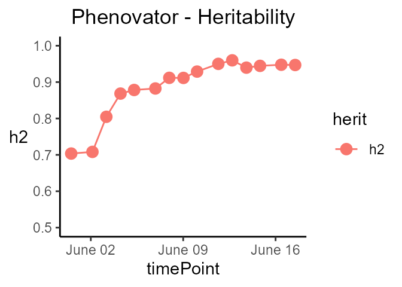
Note that when the engine is ASReml, the heritability is calculated using the formula provided in (Cullis, Smith, and Coombes 2006).
When the row and column coordinates are not available, only ASReml can be used for modeling. In that case, the model simply uses the genotype and the extraFixedFactors, if any.
| OPTION | MODEL FITTED | SPATIAL TERM |
|---|---|---|
| spatial = FALSE | \(y_t\) = genotype + \(\epsilon\) | - |
| spatial = FALSE, extraFixedFactors = c(“A,” “B”) | \(y_t\) = A + B + genotype + \(\epsilon\) | - |
In the models above and below, fixed effects are indicated in italics whereas random effects are indicated in bold. genotype can be fitted as random or fixed effect using the option what. The option useCheck is not displayed in the table, but works the same as for SpATS (see section 3.1).
When an experimental treatment is applied, for example, a water scenario, it is required to decompose the genotypic variance into the levels of the treatment. In the following example, two water scenarios, well-watered (WW) and water deficit (WD), were applied. Thus, instead of modeling one genotypic variance, there will be one genotypic variance per treatment. In this part, we will describe briefly what is specific of such modeling with the statgenHTP package using the second example data set.
We will use the TP object phenoTParchOut in which annotated time points have been replaced by NA (see statgenHTP tutorial: 2. Outlier detection for single observations).
We can first check the number of time points containing data for a given trait:
countValid(phenoTParchOut, "LA_Estimated")
#> 2017-04-13 2017-04-14 2017-04-15 2017-04-16 2017-04-17 2017-04-18 2017-04-19
#> 815 1346 1666 1665 1669 1671 1191
#> 2017-04-20 2017-04-21 2017-04-22 2017-04-23 2017-04-24 2017-04-25 2017-04-26
#> 1531 822 1671 1615 1220 1670 1071
#> 2017-04-27 2017-04-28 2017-04-29 2017-04-30 2017-05-01 2017-05-02 2017-05-03
#> 1671 1133 1133 1073 1133 1135 1084
#> 2017-05-04 2017-05-05 2017-05-06 2017-05-07 2017-05-08 2017-05-09 2017-05-10
#> 1449 779 1054 1220 1039 690 932
#> 2017-05-11 2017-05-12 2017-05-13 2017-05-14 2017-05-15 2017-05-16 2017-05-17
#> 1030 1212 1011 413 851 1151 832In this case, time point “2017-05-14” has only 488 observation, less than half of the total number of observation. It can bias the modeling at this time point and one may want to remove it before running the spatial analysis.
# getTimePoints(phenoTParchOut)
phenoTParchOut <- removeTimePoints(phenoTParchOut,
timePoints = 32)Using the geno.decomp option when modeling will have two main consequences in the model: the geno.decomp variable(s) will be added as a fixed main effect for the grouping factor and separate variance components for the genotypes at each level of the grouping or decomposing factor (and the extraFixedFactors and/or check, if any, with SpATS only). The table below provides one example with three models:
| OPTION | ENGINE | MODEL FITTED | SPATIAL TERM |
|---|---|---|---|
| geno.decomp = “treatment” | SpATS | \(y\) = \(\mu\) + treatment + treatment:genotype + rowId + colId + \(\epsilon\) | PSANOVA |
| geno.decomp = “treatment,” useCheck = TRUE, extraFixedFactors = “covar1” | SpATS | \(y\) = \(\mu\) + treatment + treatment:covar1 + treatment:check + treatment:genoCheck + rowId + colId + \(\epsilon\) | PSANOVA |
| spatial = TRUE, geno.decomp = “treatment” | ASReml | \(y\) = \(\mu\) + treatment + treatment:genotype + rowId + colId + \(\epsilon\) | AR1(rowId):AR1(colId) |
NOTE: At the moment, it is not possible to use the combination of
geno.decompand `what = “fixed.”
Using the Phenoarch example, we will apply a genotype decomposition using the variables “Scenario” and “population”:
Extracting results and plotting from the models work exactly the same as previously. For example, the spatial plot on this data set looks like the following for one time point:
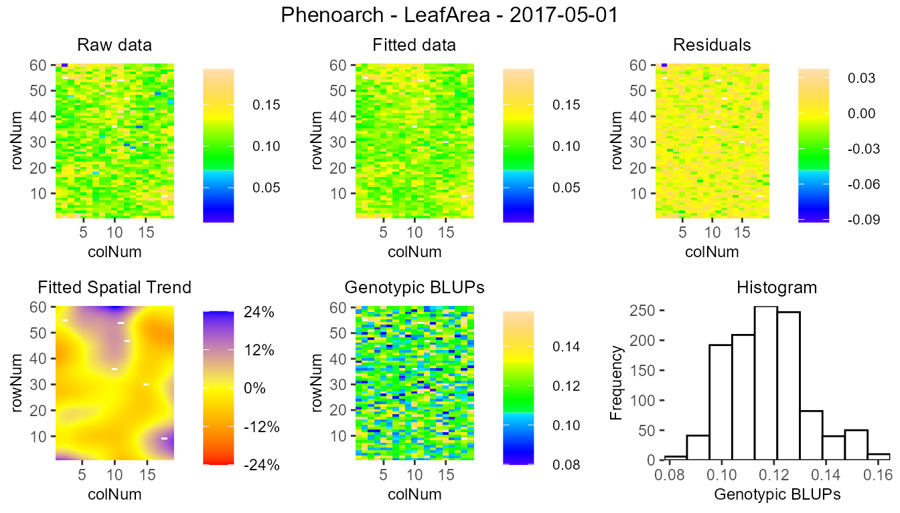
There are some significant differences in the display of some results and plots. They are highlighted below.
The predictions have two values per genotype, one for each level of the decomposition geno.decomp, here “Scenario_population,” as illustrated in the table below for three genotypes predicted from the SpATS model modPhenoSpGD.
| timeNumber | timePoint | geno.decomp | genotype | predicted.values | standard.errors |
|---|---|---|---|---|---|
| 16 | 2017-04-28 | WD_Panel1 | GenoA01 | 0.0683412 | 0.0031446 |
| 16 | 2017-04-28 | WD_Panel1 | GenoA02 | 0.0817200 | 0.0031415 |
| 16 | 2017-04-28 | WD_Panel2 | GenoB01 | 0.0768181 | 0.0042218 |
| 16 | 2017-04-28 | WD_Panel2 | GenoB02 | 0.0749743 | 0.0041744 |
| 16 | 2017-04-28 | WW_Panel1 | GenoA01 | 0.0715670 | 0.0024707 |
| 16 | 2017-04-28 | WW_Panel1 | GenoA02 | 0.0805273 | 0.0024763 |
| 16 | 2017-04-28 | WW_Panel2 | GenoB01 | 0.0733814 | 0.0040085 |
| 16 | 2017-04-28 | WW_Panel2 | GenoB02 | 0.0776304 | 0.0040099 |
The heritabilities are now given for each of the geno.decomp levels and their plot now displays one line per level.
| timeNumber | timePoint | WD_Panel1 | WW_Panel1 | WD_Panel2 | WW_Panel2 |
|---|---|---|---|---|---|
| 1 | 2017-04-13 | 0.89 | 0.91 | 0.52 | 0.49 |
| 4 | 2017-04-16 | 0.94 | 0.95 | 0.72 | 0.67 |
| 7 | 2017-04-19 | 0.92 | 0.94 | 0.75 | 0.66 |
| 10 | 2017-04-22 | 0.95 | 0.96 | 0.82 | 0.76 |
| 13 | 2017-04-25 | 0.95 | 0.96 | 0.82 | 0.74 |
| 16 | 2017-04-28 | 0.92 | 0.95 | 0.81 | 0.74 |
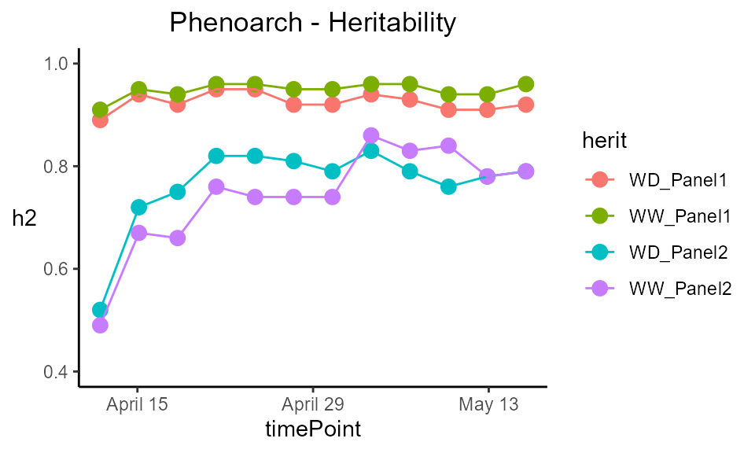
The prediction and corrected data plots display one plot per combination genotype × geno.decomp.
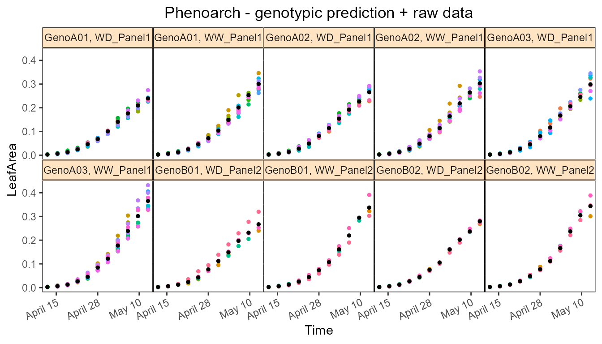